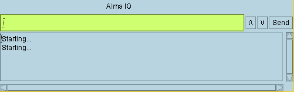

Class Gui
java.lang.Object
|
+----java.awt.Component
|
+----java.awt.Container
|
+----java.awt.Panel
|
+----java.applet.Applet
|
+----Gui
- public class Gui
- extends Applet
A GUI for a running alma process or for alma history files.
The state of the alma kb is kept track of through the history output.
There is also a connection to the stdio of alma through which all the
usual alma commands can be executed
There are three main windows: the KB display window, the alma control
window and the IO window. See details for these elsewhere.
There are two main modes of operation: as an interface to a running
alma process or as a history reader. In the latter case only the KB
display window is produced. Also, in the latter case, the applet is
viewable using netscape whereas in the former case, the applet will
run with the appletviewer.
Arguments:
-
almaArgs. The value of this should be the string that is to be used to
exec alma. The default is: "alma run false keyboard true histocket htcp
prompt false". If you decide to change that, make sure that the histocket,
prompt, and keyboard values are as in the default.
-
autoExec. The value is true or false. The default is false. If it is true,
alma will be execed on start-up, otherwise it will be execed when the
'Exec' button is clicked.
-
historyFromFile. Value true or false. If true, the GUI will run in
hostory reader mode. Default is false. The history file can be specified
in the GUI or through the next parameter.
-
historyInputURLName. The value of that is the URL for the history file
that is to be read. There is no default.
-
verbose. Value is true or false. Default is false.

-
 tty
tty
-

-
 Gui()
Gui()
-

-
 init()
init()
- Here we start a history reader and if there is a need for it, an
io interface and a control interface to some alma process.
-
makeControlPanel(Panel)
- The control panel enables the user to control the running of alma.
-
makeIOPanel(Panel)
- The IO panel reads and writes to the alma process though stdio.
-
startAlma()
- This execs the alma according to the almaArgs.

 tty
tty
public static TextArea tty

 Gui
Gui
public Gui()

 init
init
public void init()
- Here we start a history reader and if there is a need for it, an
io interface and a control interface to some alma process.
- Overrides:
- init in class Applet
startAlma
public void startAlma()
- This execs the alma according to the almaArgs.
We cannot exec alma if there is one already running and connected.
makeControlPanel
public void makeControlPanel(Panel almaControl)
- The control panel enables the user to control the running of alma.
The following controls are provided:
-
Exec. If alma is not automatically started, clicking this will
start alma. This will not work if alma is already up.
-
Step. This causes alma to step once. If alma is automatically stepping,
the results might be unexepcted.
-
Run. This causes alma to step continuously with a delay between steps
as specified by the next control. If alma is run with "run true", this
might not have the expected results.
-
Delay. The delay can be specified in milliseconds. Making the delay
shorter than is possible for the alma executable does no good.
-
Stop. This stops alma from stepping if that was initiated by the Run
button. It has no effect on a "run true" alma process.
Reset. This resets alma. It is effective for both an automatically
stepping alma process and one controlled from the GUI.
makeIOPanel
public void makeIOPanel(Panel toAlma)
- The IO panel reads and writes to the alma process though stdio.

There are two windows: one for input and one for output.
The window for input expects the same syntax as one would type at
the alma keyboard. To send a command to alma, click on "Send".
The output window displays whatever alma outputs to stdout.